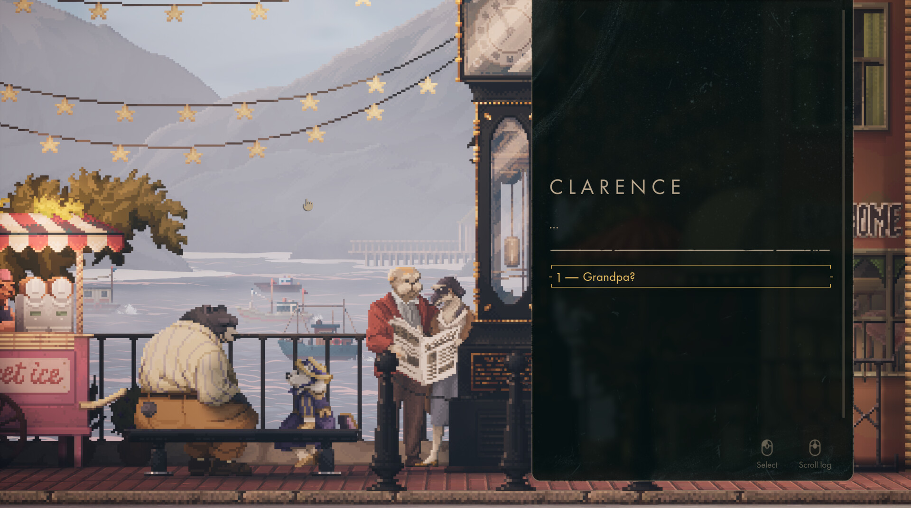
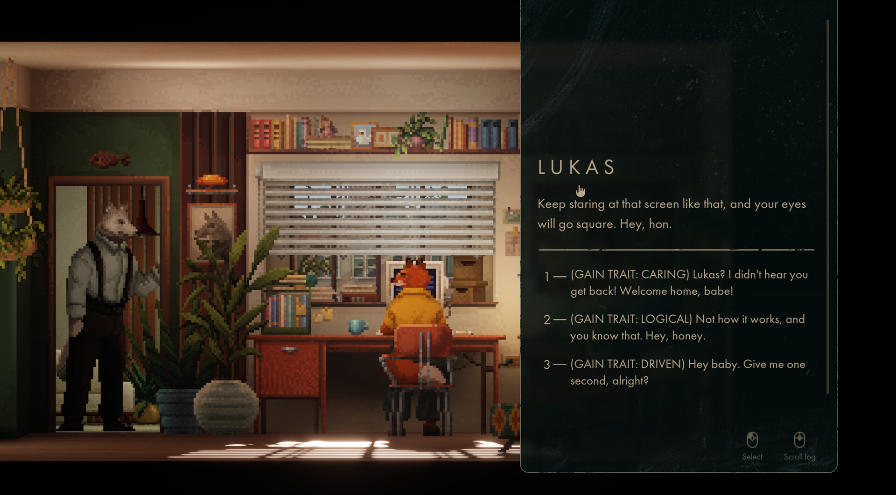
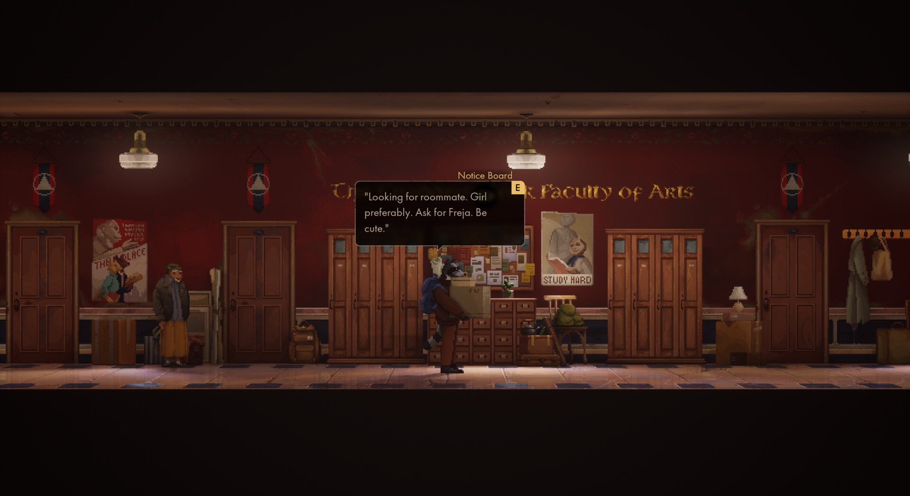
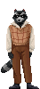
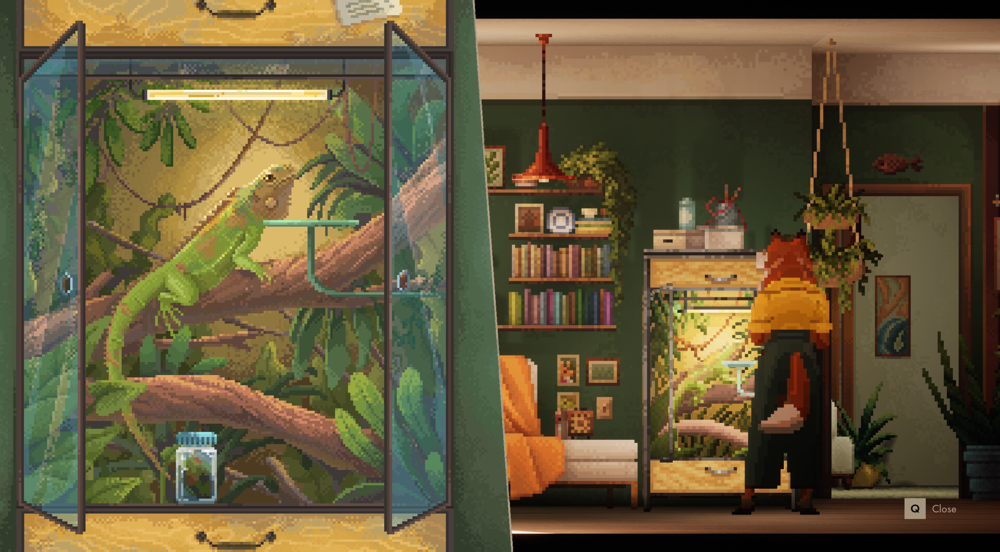
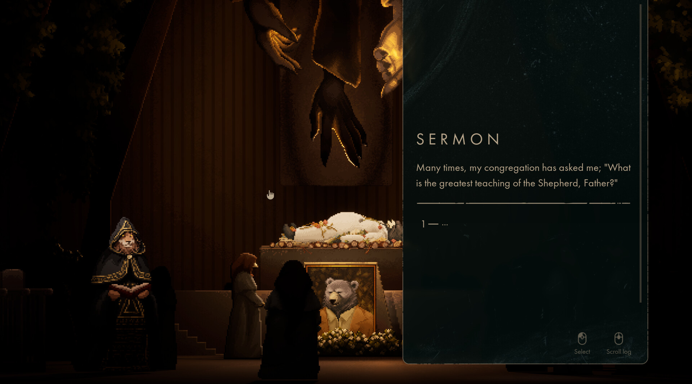
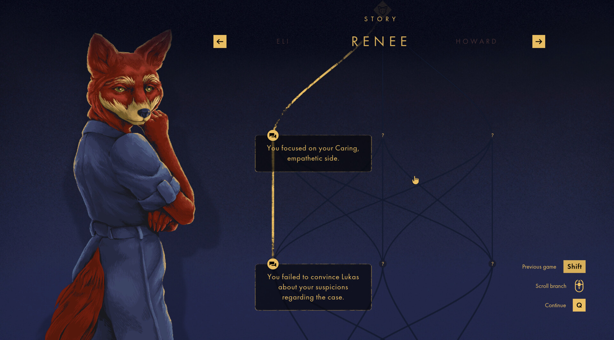
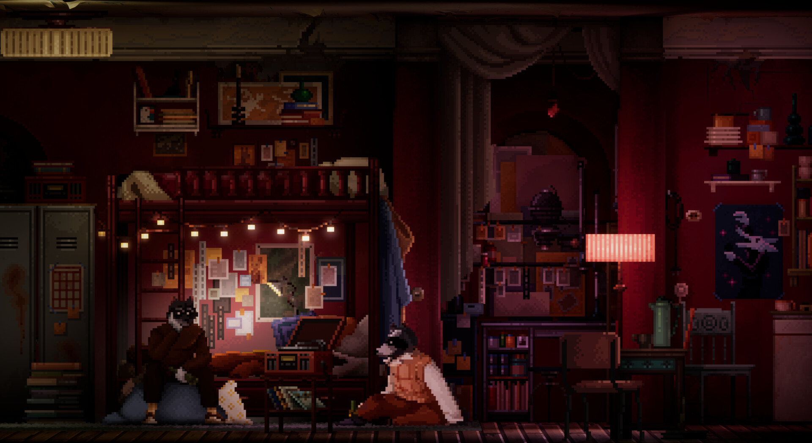
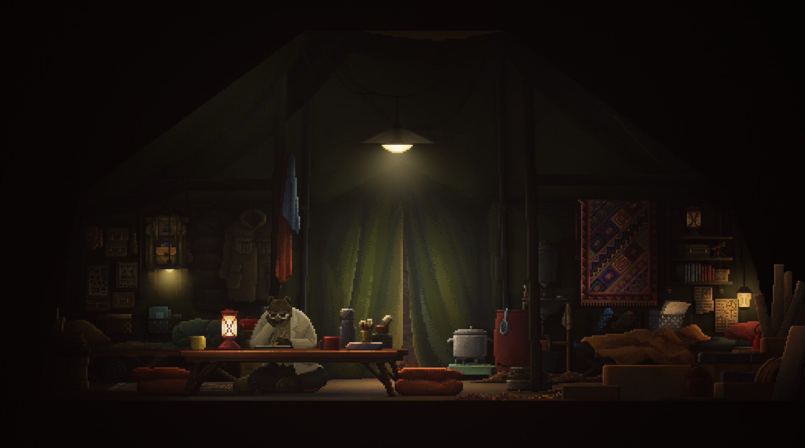

01 / THE CITY
另一座温哥华
拟人动物生活在这座城市里。街头摊位、学院走廊与家族宅邸，看似寻常的角落，各自藏着不同的生活。
熟悉的日常，陌生的秩序走进世界
WELCOME TO VANCOUVER
在《浣熊硬探》的故事发生之前，
先看看他们如何走到今天。

拟人动物生活在这座城市里。街头摊位、学院走廊与家族宅邸，看似寻常的角落，各自藏着不同的生活。

开个玩笑，认真追问，或把真正想说的话咽回去。你选择的不只是回应，也是在关系中留下的痕迹。

认识室友、收拾房间、面对家人，或开始一场实验。人生的转折，不总是以惊天动地的方式登场。
《Tails Noir Preludes》是《浣熊硬探》的前传，以四位角色的经历展开一场关于选择、成长与后果的叙事冒险。
MEET THE CHARACTERS
摄影学生、家族继承人、昔日记者与科学家。
他们想要的未来，会付出怎样的代价？

人物 / HOWARDHOWARD
敏感 · 好奇 · 笨拙的冷幽默
刚踏入大学的摄影学生，在与室友拉里的相处中学习怎样靠近别人。他敏感、好奇，也会借冷幽默掩饰尴尬；关于友谊和未来，他还没有现成的答案。
从宿舍的一次闲聊，到告别前的一段沉默，陪他走过尚未成为侦探的日子。
安装前请确认这是已有汉化版的增量修复，基于本项目使用的 Steam Windows 汉化 debug 安装制作；不含游戏本体，不是干净英文版的一键完整汉化包。其他游戏版本尚未验证。
补丁已做文件及离线逻辑检查；不代表全游戏实测通关。故事界面稳定性、实际拖放与动画时序仍在跟进，全量文本审校尚未完成。
本页为非官方游戏介绍与汉化交流页面。请支持正版游戏。
PLAY THE MOMENTS BETWEEN
走动、观察、交谈，再作出选择。
有时，一件小事就能让你更了解一个人。
一本书、一台唱片机、一处熟悉的房间。与身边的物品互动，听见人物没说出口的另一面。

体贴、锋利，或犹豫。不同的回应，让同一个人显露出不同的样子，也改变一段关系的温度。

在故事分支中回顾走过的路。重新回到那些时刻，看看另一句回答会把交谈带往何处。

A WORLD IN EVERY PIXEL
街灯、旧家具与昏暗的地下空间。
让画面和音乐，带你慢慢进入故事。
这不是只有谜团的城市。友谊、家庭、抱负与困惑，也藏在它的每一扇窗后。

一场大学生活，一段父女关系，一次对自我的追问，一项逐渐失去确定性的研究。四条人生线索，在日常片段中展开。
停下来听一段音乐，看一次神情变化，再决定你愿意让他们说出什么。

再认识一次四位主角